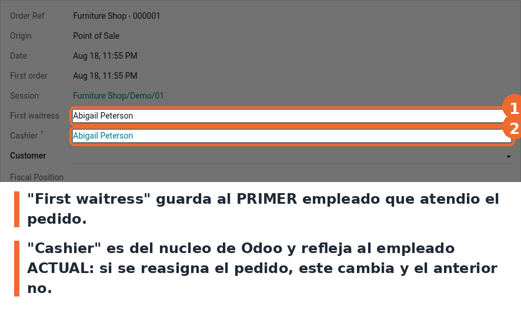

Guarda al primer empleado que atendio el pedido del Punto de Venta. Agrega el campo First waitress al pedido: se llena con el nombre del empleado la primera vez que se le asigna uno, y no se pisa si despues el pedido se reasigna.
No es lo mismo que el campo Cashier de Odoo, que viene de pos_hr, y el campo del nucleo no
vuelve redundante a este modulo: Cashier refleja siempre al empleado actual y cae al usuario
si no hay empleado asignado, mientras que First waitress guarda al primero. Los dos coinciden
mientras nadie reasigne el pedido; en cuanto se reasigna, Cashier cambia y First waitress
conserva al original. Por eso el modulo sigue haciendo falta. No requiere configuracion: solo que
pos_hr este instalado, cosa que el modulo exige como dependencia.
Entra a Punto de Venta › Pedidos y abri cualquier pedido. El campo First waitress esta entre Session y Cashier, para poder comparar los dos de un vistazo.

Campo First waitress en el formulario del pedido de Punto de Venta
@api.constrains en vez de
@api.depends. Se midio en Odoo 19 que funciona: el campo se llena al crear el pedido y al
escribir el disparador (employee_id), que es el comportamiento que hay hoy en produccion. Aun
asi no es la forma canonica de declarar un campo calculado almacenado. Cambiar el decorador
recalcularia los datos historicos, asi que queda como decision pendiente del usuario.Cashier del nucleo no vuelve redundante a este modulo. Se evaluo darlo de baja
contra pos_hr y no corresponde: Cashier sigue al empleado actual del pedido y First
waitress guarda al primero que lo atendio.static/description/icon.png. En la ficha de Apps se ve el cubo generico de Odoo. Hace
falta arte, no se inventa.